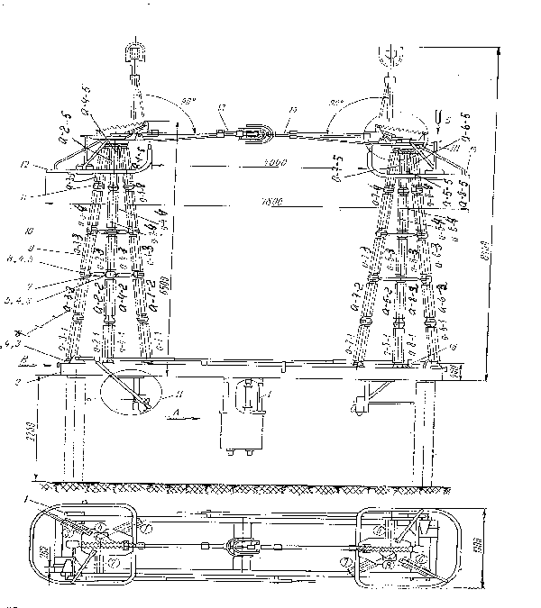
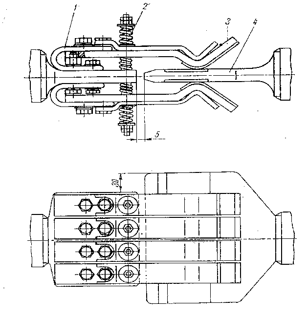

Substations Technical Procedure
Out Door Disconnect Switch 500KV
PHB-500T
Russia
Equipment Inspection (I1-Y1) or after heavy Short Circuits
|
|
Substations Technical Procedure |
|
| Equipment: Out Door Disconnect Switch 500KV PHB-500T Russia |
Document No: DS-004-r0 | |
| Issued To: Networks | ||
| Status: APPROVED | ||
| Procedure: Equipment Inspection (I1-Y1) or after heavy Short Circuits |
Date Approved: May 8 , 2000 | |
| Review Date: May 2005 | ||
Introduction
This document lists the Minor Maintenance Procedures P1, which must be performed every year as indicated by Y1 in the title block.or after every heavy short circuit.
Safety Precautions
Tools and Equipment
Work to be Carried Out
|
1 |
Inspect the insulators, if
porcelain shows shops and scratches , replace them by new one using a
special device for this purpose see Fig 1.
|
|
2 |
Clean the surface of the insulators from dust, dirt and other deposits for cleaning purposes use benzene . If the contact surface shows burning traces clean these spots or replace the damaged parts. |
|
3 |
Check the contact pressure and
adjust it.
|
|
4 |
Check all gears for the proper operation and see that there is no jamming or wearing of the parts and replace certain parts if necessary. |
|
5 |
Check the circuitry of the operation mechanism. Clean all parts and grease all friction parts of the gears and drivers. |
|
6 |
Check the grounding of the circuit breaker for the proper state. |
|
7 |
Check the value of the main blade current circuit resistance (micro ohm Test) (it should be within 10 ohm). If the circuit resistance exceeds the indicated value reduce it to the rated value by adjusting the contact pressure and by tightening the bolted connections. |
Location:
Equipment code:
Checked by:
Date:
Signature:

Figure 1

Figure 2